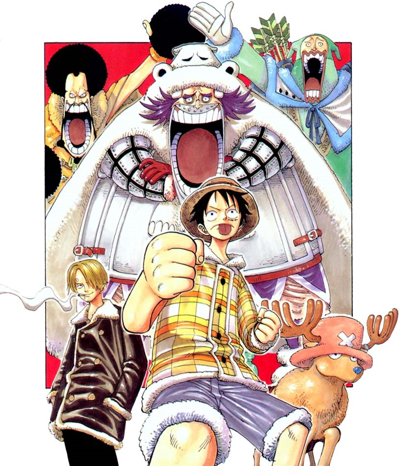

After Nami falls ill with an unknown disease, the Straw Hat Pirates travel to Drum Island in search of a doctor. The crew meets a bizarre talking reindeer named Tony Tony Chopper, who helps them fend off the country's former despot king Wapol after he returns to reclaim his throne.
The Island of Doctors and Sickness
Nami catches a deadly fever in Little Garden, forcing the Straw Hat Pirates to make a detour to the king-less island of Drum. On their way to the island, they are attacked by a group of pirates led by Wapol, whose Baku Baku no Mi allows him to eat anything and assimilate it into himself. After a brief skirmish, Luffy sends Wapol flying into the sea and the Straw Hats continue onto Drum Island. When they land, they are attacked again, this time by Drum Island's militia. However, after hearing about their plight, Dalton, the former captain of the guard, calls off the attack and leads them to the town of Bighorn.There, he explains the situation that the island is in.
In the recent past, the island was ruled by a cruel king, Wapol, the pirate the Straw Hats encountered earlier. Wapol banished all but the 20 best doctors from the island. For any medical treatment, one would have to beg him for the help of one of the remaining doctors, his "Isshi-20" as he called them. However, a powerful pirate named Blackbeard attacked the country. After witnessing Blackbeard's power, Wapol and his cabinet, with the exception of Dalton fled to the sea without even fighting back. Now, there is only one doctor left on the island—Dr. Kureha, who is often called a witch by the townspeople. She comes into towns at her own whim to check for patients. She lives in Drum Castle, which is on top of the highest of the "Drum Rockies", a chain of drum shaped mountains.
The Reindeer Doctor
After learning this, Luffy and Sanji head for the mountain with Nami in tow, only to be attacked by dozens of Lapahns, giant ferocious rabbits. A fight ensues, and its ferocity causes an avalanche. Sanji is injured, so Luffy must climb up the mountain while carrying both Nami and Sanji. When he reaches the top, both his hands and feet are severely damaged. He collapses in front of Dr. Kureha and her assistant, Tony Tony Chopper.
Meanwhile, Wapol and his crew return to Drum Island and attack a city to announce their presence.[9] Dalton tries to fight them but is defeated.Having done this, Wapol and his crew decide to go back to their old home, Drum Castle. As this is happening, Dr. Kureha and Chopper are curing Nami and caring for Sanji and Luffy, there are a few comedic scenes, mostly involving Sanji and Luffy trying to catch and cook Chopper. Later, Dr. Kureha explains Chopper's tragic past to Sanji and Nami (Luffy was too busy chasing after Chopper trying to convince him to join the crew).
When Chopper was younger, he ate the Hito Hito no Mi. As a result, and because of his blue nose, the other reindeer would not accept him into their herds. He was an outcast for much of his life. Finally, he found a friend in a Dr. Hiriluk, a quack doctor that was trying to cure the people of Drum but usually made a mess of things. He found Chopper with bullet wounds in his back. By curing Chopper, he gained Chopper's trust and inspired Chopper to become a doctor. However, their friendship was not to last. Dr. Hiriluk kicked Chopper out of his home, seemingly for no reason. Later, Chopper found out that Dr. Hiriluk was going to die in ten days. Despite his attempts to save him, the good doctor sacrificed him for the sake of Chopper and his country. Since then, he has stayed with Dr. Kureha, and learned the art of doctoring.
The Siege of Wapol Castle
Eventually, Wapol and his crew arrive at the castle. His senior henchman, Chess and Kuromarimo are in tow. Kuromarimo distracts the crew by throwing fuzzy black balls that will not come off of Sanji. This gives Wapol time to get to the armory and devour a cannon. It is then that another trait of the Baku Baku Fruit is revealed - Wapol can become whatever he eats! Wapol's arms turn into a cannon, and he starts shooting at Dr. Hiriluk's flag (his memorial as Kureha puts it). Chopper does not respond so Luffy takes action, standing in front of the cannonballs so they do not damage the flag, effectively thwarting the assault.
Wapol then employs a different strategy, he eats Chess and Kuromimo. Then turns into a house, and a combination of Chess and Kuromarimo emerges - Chessmarimo! Sanji tries to enter the fight, but Kureha cripples him, by attacking his spine and telling him that he has still not recovered. Chopper finally reacts and fights with Chessmarimo, showing off the skills he gains through his invention, the Rumble Ball. Using the Rumble Ball he finds Chessmarimo's weakness and defeats him.
Wapol goes into the castle looking to eat more weaponry along the way running into Nami giving chase when he realizes she is a friend of Luffy, when he gets stuck in a stairwell he "eats himself" and emerges skinny before continuing the chase. Luffy finds Nami in time to stop Wapol from killing her, but Wapol escapes. Luffy pursues Wapol, but Wapol reaches a tower which supposedly holds a very powerful and giant cannon called Royal Drum Crown 7-Shot Bliking Cannon. Wapol attempts to shoot Luffy with it, however while it sat unused during his absence, Snow Birds made nests in it. As a result, Wapol's attack on Luffy fails.The king then tries to stop Luffy with the cannon he ate earlier, but Luffy dodges it and sends Wapol into the castle's ceiling with his bowgun attack./p>
Realizing he is outmatched, Wapol frantically begs Luffy to spare him by offering him the position of second king. Luffy does not listen and sends Wapol flying to another island with Gomu Gomu no Bazooka.
Cherry Blossoms in the Snow
In the aftermath, Luffy continues to try and recruit Chopper to his crew.Chopper, remembering how his old mentor, Dr. Hiriluk, wanted him to go out to sea and see the world, decides to join the Straw Hats. When he goes to tell Kureha this, she flat out refuses to let him leave, chasing after the reindeer with a variety of weapons until Chopper escapes down the mountain with the rest of the Straws Hats on a sled. Turns out however, Kureha's refusal was all an act (or in a way, reverse psychology) to convince Chopper to leave as she does not like tearful goodbyes. Dr. Kureha then has most of the villagers set up cannons pointed into the air and uses the "cure for the country's cold heart" that Dr. Hiriluk had developed before he died, to produce the image of falling cherry-blossoms on the snow, as a sendoff to her beloved student. After witnessing this, the Straw Hats finally set off for Arabasta.
However, in the closing moments of the arc, as Kureha and Dalton are talking, one of the villagers comes to Dalton with Luffy's bounty poster. When Kureha realizes that his full name is Monkey D. Luffy, she reveals that Gold Roger's full name was actually Gol D. Roger and that her student seems to be sailing with a very dangerous man. Also, two of the villagers remember that they had to give Luffy a message from Ace, a man who was searching for Blackbeard and was going to wait for Luffy in Arabasta for ten days. But since Luffy is gone, they did not have the time to tell him. However, Dalton, who remembered Vivi as Arabasta's princess, knows it is all right since the Straw Hats are bound to encounter Ace in Arabasta.